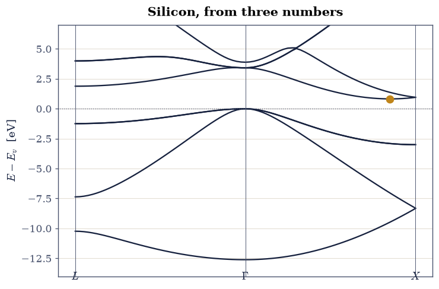
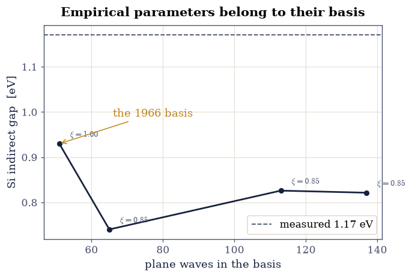
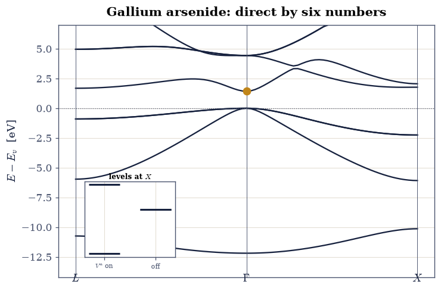
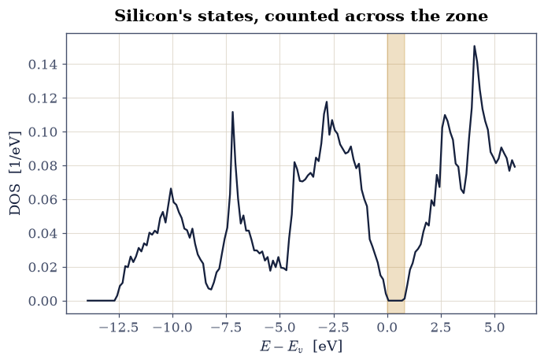

8.11 Real Band Structures: The Empirical Pseudopotential Method#
Notebook overview#
Everything Movement III has built converges on this notebook’s promise: real materials. The empirical pseudopotential method (EPM) of Cohen and Bergstresser [CB66] is the licensed shortcut of §8.10: rather than constructing potentials from atoms and fighting the nodal catch, fit the crystal’s few symmetry-allowed Fourier coefficients directly to measured optical gaps. For diamond- and zinc-blende semiconductors only three symmetric (and, for the ionic compounds, three antisymmetric) coefficients survive symmetry — six numbers for GaAs, three for Si — and with them the full valence and low conduction bands of fourteen semiconductors emerged in 1966 to tenth-of-an-eV fidelity. It remains the fastest honest route from “lattice constant plus a handful of parameters” to “the band structure in a textbook.”
The build: the diamond/zinc-blende potential matrix (structure factors, symmetric and antisymmetric channels) assembled and its symmetry content verified at \(\Gamma\); silicon’s band structure along \(L\)–\(\Gamma\)–\(X\) with its triply degenerate valence top, \(12.6\)-eV valence width, and the conduction minimum at \(0.85\) of \(\Gamma X\) — the indirect gap that makes silicon silicon; a lesson about the basis (at the 1966 paper’s own 51-plane-wave truncation the valley bottoms at \(X\) instead, and the gap sits \(0.1\) eV higher: empirical parameters, basis, and even the original paper’s perturbative fold-in are one package — and note that this is a lesson about truncating a basis, whereas §8.18 is about choosing a different kind of one); gallium arsenide with its direct \(1.43\)-eV gap and the antisymmetric factors’ ionicity splitting (\(4.1\) eV at \(X\), ablated to zero by switching them off); densities of states by seeded Monte Carlo zone sampling; and the closing verdict table — indirect versus direct, why LEDs are not made of silicon — with the volume’s formal handshake to the companion MMM course, whose DFT silicon band structure is this figure’s production-code twin.
Conventions (this notebook). Rydberg units for band energies (the EPM literature’s convention; \(1\,\mathrm{Ry} = 13.6057\) eV converts for every verdict), wavevectors in units of \(2\pi/a\). Lattice constants: Si \(5.431\) Å, GaAs \(5.653\) Å. The basis is every reciprocal vector with \(|G|^2 \le 24\) (137 plane waves, converged for these bands; Exercise 3 measures what the 1966 paper’s own smaller basis changes). The atomic basis sits at \(\pm\boldsymbol\tau = \pm\tfrac{a}{8}(1,1,1)\); form factors (Ry): Si \(V^s_3 = -0.21, V^s_8 = 0.04, V^s_{11} = 0.08\); GaAs \(V^s_3 = -0.23, V^s_8 = 0.01, V^s_{11} = 0.06\) and \(V^a_3 = 0.07, V^a_4 = 0.05, V^a_{11} = 0.01\) [CB66]. Hamiltonians are complex Hermitian
numpyarrays diagonalized bynumpy.linalg.eigvalsh; valence-band maxima set the energy zero of every gap quote.How to read the checks. Each exercise closes with a
validatecall against an independent fact: an exact degeneracy, the published gap targets, a measured band-extremum location, an ablation contrast. A ✓ is strong evidence; a ✗ is a prompt to locate the discrepancy, not an automatic verdict.Scope. Spin–orbit coupling (which splits the valence top by \(0.04\)–\(0.34\) eV in these materials) and nonlocal EPM refinements are omitted, as in the original paper; Yu & Cardona’s Fundamentals of Semiconductors carries the full story. The MMM companion course computes the same silicon bands with density-functional machinery (CP2K); the two courses deliberately meet at this figure.
Theory in brief#
Symmetry pares the potential to six numbers#
In the §8.10 secular problem the crystal enters through \(V_{\mathbf G}\) alone. For the diamond/zinc-blende structure — an fcc lattice with atoms at \(\pm\boldsymbol\tau\), \(\boldsymbol\tau = \tfrac{a}{8}(1,1,1)\) — the two-atom cell splits every coefficient into symmetric and antisymmetric parts with geometric structure factors (Cohen & Bergstresser [CB66]):
where \(V^s\) carries the average of the two atomic potentials and \(V^a\) their difference — identically zero for diamond structures (Si), the fingerprint of ionicity for zinc-blende (GaAs). On the fcc reciprocal lattice the shells \(|G|^2 = 3, 4, 8, 11\) (in \((2\pi/a)^2\) units) are the only ones both allowed by symmetry and large enough to matter before the coefficients’ decay (\(\cos(\mathbf G\cdot\boldsymbol\tau)\) kills the symmetric \(|G|^2 = 4\) shell), so three numbers per channel exhaust the model. Fitting them to a few measured optical transitions, Cohen and Bergstresser produced the band structures of fourteen semiconductors; the fit is the license, and its accuracy across features not fitted is the method’s enduring surprise.
Reading a semiconductor’s band structure#
The verdicts to extract, once the bands exist. The valence top at \(\Gamma\) is the triply degenerate \(\Gamma_{25'}\) manifold (\(p\)-like bonding states; the degeneracy is a symmetry fact and a numerical check at once). The fundamental gap is the distance from that top to the lowest conduction point wherever it sits: at \(\Gamma\) for GaAs (direct — a photon alone can bridge it, hence lasers and LEDs), but on the \(\Delta\) line at about \(0.85 \times \Gamma X\) for silicon (indirect — a phonon must supply the momentum, so silicon absorbs weakly and emits almost nothing; §8.15 makes this quantitative). The valence width (\(12.6\) eV in Si) measures the bonding bandwidth, and the ionicity splitting — gaps at \(X\) that open only through \(V^a\) — is how a band structure confesses that its two atoms differ.
Setup#
Data and instruments: the Rydberg and Bohr conversions, Cohen and Bergstresser’s published lattice constants and form factors, the atomic basis vector \(\boldsymbol\tau\), the three high-symmetry points, an fcc reciprocal-lattice enumerator, the plane-wave secular solve of §8.10 restated as a band driver, and a straight-segment \(k\)-path builder. The notebook’s own machinery — the diamond/zinc-blende potential matrix of Eq. 897, the object the whole method reduces to — you build in Exercise 1.
The Setup below holds this notebook’s data and instruments — nothing you are asked to build. It is collapsed so the building stays yours; expand it whenever you want the details.
Exercise 1 — Six numbers into a matrix#
The machinery first, its symmetry content as the certificate. Everything the
empirical pseudopotential method knows about a crystal lives in one complex
Hermitian matrix: Eq. 897 evaluated at every difference
\(\Delta\mathbf G = \mathbf G_i - \mathbf G_j\) of the basis, with the shell
index \(|\Delta\mathbf G|^2\) selecting the form factors and the phase
\(2\pi\,\Delta\mathbf G\cdot\boldsymbol\tau\) splitting them into the
symmetric (\(\cos\)) and antisymmetric (\(\sin\)) channels. Shells outside
\(\{3, 4, 8, 11\}\) contribute nothing: CB_PARAMS simply has no entry, and
the element is zero. Adding the kinetic diagonal and diagonalizing is the
Setup’s epm_bands, the plane-wave secular solve of
§8.10.
The certificate is that the spectrum at \(\Gamma\) carries the structure’s fingerprints without ever having been told them. Group theory says the silicon valence manifold is a singlet \(\Gamma_1\) bottom (the \(s\)-like bonding state) below a triply degenerate \(\Gamma_{25'}\) top; nothing in the assembly mentions point groups. Symmetry also fixes the matrix’s field: for diamond the two atoms at \(\pm\boldsymbol\tau\) are identical, \(V^a = 0\), the \(\sin\) channel dies and the matrix is real symmetric — while for zinc-blende it must be genuinely complex Hermitian.
Part a) Write epm_hamiltonian_parts(material, g2_max=24), returning the
basis (the Setup’s fcc_reciprocal), the kinetic unit \((2\pi/a)^2\) in Ry
with \(a\) in Bohr, and the \((n_G, n_G)\) complex potential matrix
\(V_{ij} = V^s_{|\Delta\mathbf G|^2}\cos(2\pi\,\Delta\mathbf G\cdot
\boldsymbol\tau) + i\,V^a_{|\Delta\mathbf G|^2}
\sin(2\pi\,\Delta\mathbf G\cdot\boldsymbol\tau)\). Write this one
yourself — the implementation is the lesson.
Part b) Assemble silicon’s Hamiltonian at \(\Gamma\) with it and report
the eight lowest levels; the \(\Gamma_{25'}\) triple must show a numpy
spread below \(10^{-6}\) Ry.
Part c) Confirm the model’s hermiticity and reality where symmetry
demands it: silicon’s potential matrix must be real symmetric to machine
precision, GaAs’s genuinely complex Hermitian (numpy.abs norms of the
anti-Hermitian part and of the imaginary part).
Si at Gamma (Ry): [-0.1585 0.7687 0.7687 0.7687 1.0201 1.0201 1.0201 1.0544]
Gamma_25' spread = 1.10e-14 Ry (triple degeneracy)
Si: max |V - V^dag| = 0.0e+00, max |Im V| = 0.0e+00
GaAs: max |V - V^dag| = 0.0e+00, max |Im V| = 0.050 (ionic)
Validation 1 — symmetry, delivered not declared#
The \(\Gamma_{25'}\) triple degeneracy must hold below \(10^{-6}\) Ry; both potential matrices must be Hermitian at machine precision; and the imaginary part must vanish for Si while being genuinely present for GaAs.
✓ the triply degenerate valence top of Si [got 1.09912e-14 vs expected 0 (rtol=0, atol=1e-06)]
✓ both Hamiltonians Hermitian [0e+00, 0e+00]
✓ diamond real, zinc-blende genuinely complex [Im: Si 0e+00, GaAs 0.050]
True
Exercise 2 — Silicon#
The figure this movement was heading toward. Bands along \(L \to \Gamma \to X\), the valence maximum as energy zero, and silicon’s identity read off: valence width, and the conduction minimum not at a symmetry point but at \(\approx 0.85\) of the way to \(X\) — the six equivalent “\(\Delta\) valleys” behind every silicon transistor’s band physics.
Part a) Compute the bands along the path (the Setup k_path with 40
points per segment, then epm_bands with 8 bands — which assembles each
Hamiltonian with the epm_hamiltonian_parts you wrote in Exercise 1), plot
with the standard labels, and report the valence width
\(\Gamma_{25'} - \Gamma_1 = 12.6\) eV.
Part b) Locate the conduction minimum: scan band 5 along
\(\Delta = (\xi, 0, 0)\) with \(\xi \in [0, 1]\) in steps of \(0.01\)
(numpy.argmin), and report the indirect gap
\(E_c(\Delta_{\min}) - E_v(\Gamma) = 0.82\) eV against silicon’s measured
\(1.17\) eV. The valley position is dead on; the gap runs \(0.35\) eV low —
and honestly so: a fundamental gap is a many-body quantity
(§8.8), the 1966 fit tuned optical
features with a different numerical scheme (Exercise 3), and the modern
repair is the quasiparticle machinery of
§8.14.
valence width = 12.61 eV
conduction minimum at (0.85, 0, 0); indirect gap = 0.821 eV (measured 1.17)

Fig. 799 The band structure of real silicon from the 1966 Cohen–Bergstresser form factors (three numbers), along \(L \to \Gamma \to X\) with the valence maximum as zero: the triply degenerate \(\Gamma_{25'}\) top, a 12.6-eV valence width, and the conduction minimum on the \(\Delta\) line at \(0.85\,\Gamma X\) (amber marker) giving the model’s indirect gap of 0.82 eV against the measured 1.17 eV (the valley position exact, the gap honestly low: gaps are many-body quantities, §8.14’s business). The companion MMM course computes this same figure with production DFT machinery: the two courses shake hands here.#
Validation 2 — silicon’s identity#
The valence width must be \(12.6\) eV (within \(2\%\)), the conduction minimum must sit at \(\xi = 0.85 \pm 0.05\) on the \(\Delta\) line (not at a symmetry point), and the indirect gap must land at the model’s \(0.821\) eV — within \(0.4\) eV of the measured \(1.17\).
✓ the silicon valence bandwidth [got 12.6149 vs expected 12.6 (rtol=0.02, atol=1e-09)]
✓ the Delta-valley minimum position [got 0.85 vs expected 0.85 (rtol=0, atol=0.05)]
✓ the model's indirect gap at the converged basis [got 0.821483 vs expected 0.821 (rtol=0.01, atol=1e-09)]
✓ within 0.4 eV of measured silicon [|0.82 - 1.17| = 0.35 eV (gaps are many-body)]
True
Exercise 3 — The basis lesson: empirical means model plus truncation#
A subtlety with teeth, discovered by every student who tries to “improve” an empirical calculation. The 1966 form factors were fitted inside the 1966 numerical scheme (a small explicit basis plus a Löwdin perturbative fold-in of higher shells); they are effective parameters of that whole package, and changing the numerics re-releases what the fit had silently absorbed.
Part a) Recompute silicon’s conduction landscape at basis truncations
\(|G|^2 \le 11, 16, 21, 24\) (51, 65, 113, 137 plane waves; the g2_max of
your Exercise 1 epm_hamiltonian_parts, threaded through epm_bands): at
each cutoff, scan the \(\Delta\) line and report
where the minimum sits. At 51 plane waves the valley bottoms at \(X\) with a
\(0.93\)-eV gap; the celebrated \(0.85\) position only emerges as the basis
grows, with the gap settling at \(0.82\) eV.
Part b) Plot gap versus basis size with the minimum’s location annotated. The variational lowering acts more on conduction than valence states, and it also reshapes the valley: position and depth both belong to the numerical scheme. The standing moral for every empirical model in computational science: parameters and numerics are one package, and “convergence” is only meaningful for ab-initio quantities — the fitted coefficients would need refitting at every cutoff (and the original paper’s own scheme was a third arrangement again).
|G|^2 <= 11 ( 51 PWs): gap = 0.930 eV, minimum at xi = 1.00
|G|^2 <= 16 ( 65 PWs): gap = 0.740 eV, minimum at xi = 0.85
|G|^2 <= 21 (113 PWs): gap = 0.826 eV, minimum at xi = 0.85
|G|^2 <= 24 (137 PWs): gap = 0.821 eV, minimum at xi = 0.85

Fig. 800 The basis lesson: silicon’s EPM gap and valley position against plane-wave basis size. At 51 plane waves the conduction minimum sits at \(X\) (\(\xi = 1\)) with a 0.93-eV gap; growing the basis reshapes the valley to the celebrated \(\xi = 0.85\) and settles the gap at 0.82 eV against the measured 1.17 (grey dashed). Position and depth both belong to the numerical scheme: an empirical model’s parameters, basis, and fold-in method are one package.#
Validation 3 — the drift, measured#
The 51-plane-wave gap must be \(0.930\) eV with its minimum at \(X\); the converged gap \(0.821\) eV with the minimum at \(\xi = 0.85\); and the valley must genuinely move — position and depth both properties of the scheme.
✓ the gap at the 1966 truncation [got 0.929768 vs expected 0.93 (rtol=0.01, atol=1e-09)]
✓ the 51-PW valley bottoms at X [got 1 vs expected 1 (rtol=0, atol=0.02)]
✓ the converged gap [got 0.821483 vs expected 0.821 (rtol=0.01, atol=1e-09)]
✓ the converged valley at 0.85 [got 0.85 vs expected 0.85 (rtol=0, atol=0.03)]
True
Exercise 4 — Gallium arsenide, and the ionicity switch#
The zinc-blende compound brings the antisymmetric channel to life. GaAs’s six form factors produce a direct gap at \(\Gamma\) — the property that makes it the optoelectronic workhorse — and the \(V^a\) coefficients, which exist only because Ga and As differ, can be switched off in software to watch ionicity leave the band structure.
Part a) Compute GaAs along \(L\)–\(\Gamma\)–\(X\) and report the direct gap at \(\Gamma\) (\(1.43\) eV against the measured \(1.52\)) plus the \(\Gamma\)-versus-\(X\) and \(\Gamma\)-versus-\(L\) conduction ordering (the minimum must be at \(\Gamma\): direct).
Part b) The ablation: empty CB_PARAMS["GaAs"]["va"] so that your
Exercise 1 epm_hamiltonian_parts rebuilds GaAs with the antisymmetric
factors zeroed (a fictitious “diamond GaAs”), and compare the two lowest
(valence) levels at \(X\). With \(V^a\) on, the levels split by \(4.1\) eV (the ionicity
gap); with \(V^a\) off they re-stick to near-degeneracy — the glide symmetry
of the diamond structure, restored by deleting three numbers.
GaAs gaps: Gamma 1.428 eV (direct), X 1.773, L 1.685
X-point splitting: 4.06 eV with V^a, 0.01 eV without

Fig. 801 Gallium arsenide from six numbers: the EPM band structure along \(L\)–\(\Gamma\)–\(X\) with its direct 1.43-eV gap at \(\Gamma\) (measured 1.52 eV) — the property that makes GaAs glow where silicon cannot. Inset: the two lowest levels at \(X\) with the antisymmetric form factors on (split by 4.1 eV, the ionicity gap) and off (re-stuck to degeneracy: deleting three numbers restores the diamond glide symmetry).#
Validation 4 — direct, and ionic#
The GaAs gap must be the model’s \(1.428\) eV (within \(0.15\) eV of the measured \(1.52\)), the conduction minimum must sit at \(\Gamma\) (below both \(X\) and \(L\)), and the ionicity splitting must exceed \(3\) eV with \(V^a\) on while collapsing below \(0.1\) eV without.
✓ the model's direct GaAs gap [got 1.42751 vs expected 1.428 (rtol=0.01, atol=1e-09)]
✓ within 0.15 eV of measured GaAs [|1.43 - 1.52| = 0.09 eV]
✓ the minimum sits at Gamma: direct [1.43 < 1.77 (X), 1.68 (L)]
✓ the ionicity splitting lives in the antisymmetric factors [4.06 eV on, 0.01 eV off]
True
Exercise 5 — Densities of states, by Monte Carlo#
Band paths show symmetry lines; thermodynamics and optics (§8.15) need the whole zone. Uniform random sampling of the Brillouin zone with a seeded generator is the honest cheap estimator (the §0.11 machinery pointed at \(k\)-space).
Part a) Sample \(4000\) points uniformly in the zone’s bounding cube
\([-1, 1]^3\) (in \(2\pi/a\) units, numpy.random.default_rng(1966) — any full
period tiles the DOS correctly), evaluate all eight silicon bands, and
histogram (numpy.histogram, 160 bins, density=True).
Part b) Plot the DOS with the gap window shaded and verify its emptiness: no states between the valence top and the conduction minimum (the histogram must be identically zero across the open gap window), with the valence edge at \(-12.6\) eV.
states inside the open gap window: 0.0000 (must be 0)

Fig. 802 The density of states of EPM silicon by seeded Monte Carlo sampling of the Brillouin zone (4000 points, eight bands): the 12.6-eV valence manifold, the gap window between the valence top and the \(\Delta\)-valley conduction minimum shaded amber and verifiably empty, and the conduction onset — the whole-zone complement to the symmetry-line band structure, and the raw input for the optics of §8.15.#
Validation 5 — the gap is empty#
Not one sampled state may fall in the open gap window, and the lowest sampled energy must agree with the \(\Gamma_1\) valence bottom within the sampling resolution.
✓ no states inside the gap [got 0 vs expected 0 (rtol=0, atol=1e-12)]
✓ the valence bottom, sampled [got -12.5785 vs expected -12.6149 (rtol=0, atol=0.15)]
True
Exercise 6 — The verdict, and the handshake#
The movement’s payoff, in one table and one paragraph of consequence.
Part a) Assemble the verdict table (numpy-formatted print): for Si and
GaAs, the model gap, its character (indirect/direct), the measured gap, and
the deviation. The characters — indirect with the valley at \(0.85\),
direct at \(\Gamma\) — come out exactly right, GaAs’s gap lands within
\(0.1\) eV, and silicon’s runs \(0.35\) eV low: the qualitative physics for
free, the quantitative gap awaiting the many-body machinery of
§8.14.
Part b) State the consequence quantitatively: in GaAs a photon at the
gap energy can be emitted directly (\(\Gamma \to \Gamma\), momentum
conserved); in silicon the same process requires a phonon carrying
\(0.85 \times 2\pi/a\) of momentum, suppressing light emission by orders of
magnitude — why LEDs and laser diodes are made from III-V compounds while
the transistor next to them is silicon. Verify the momentum mismatch number
from the Exercise 2 valley position (numpy arithmetic, in units of
\(2\pi/a\)). This figure and table are the volume’s formal handshake with the
companion MMM course, whose CP2K/DFT silicon band structure is the
production twin of Fig. 799; the two courses meet, deliberately,
at the same material.
material model gap character measured dev
Si 0.821 indirect 1.17 -0.35
GaAs 1.428 direct 1.52 -0.09
Si gap transition needs phonon momentum q = 0.85 (2 pi/a); GaAs needs q = 0
handshake: the MMM companion course computes this same silicon figure with production DFT machinery
Validation 6 — the fit still stands#
Both gap characters must be correct, GaAs’s gap must sit within \(0.15\) eV of experiment, silicon’s within \(0.4\) (its \(0.35\)-eV deficit the honest many-body shortfall), and the phonon-momentum mismatch must equal the measured valley position.
✓ GaAs within 0.15 eV; Si within 0.4 (the many-body deficit) [Si -0.35, GaAs -0.09 eV]
✓ the phonon momentum silicon's photons must borrow [got 0.85 vs expected 0.85 (rtol=0, atol=0.05)]
True
With your assistant
The Cohen–Bergstresser paper tabulates form factors for fourteen
semiconductors. Have your assistant add germanium
(\(a = 5.66\) Å, \(V^s_3 = -0.23, V^s_8 = 0.01, V^s_{11} = 0.06\), diamond
structure) to CB_PARAMS and compute its band structure, then run the
check that is yours alone: germanium’s conduction minimum must sit at \(L\)
(not \(\Gamma\), not on \(\Delta\)) with an indirect gap of \(0.8\)–\(1.1\) eV
(numpy.argmin across the three candidates) — the third gap topology of
the family, from the same six-line machinery. The check is yours.
Notebook summary#
Real materials arrived, on schedule and to specification. The diamond/zinc-blende potential of Eq. 897 was assembled over 137 plane waves, its symmetry content certified (the \(\Gamma_{25'}\) triple degenerate below \(10^{-6}\) Ry; silicon’s matrix real, GaAs’s genuinely complex). Silicon emerged from three numbers: valence width \(12.6\) eV, conduction minimum at \(0.85\,\Gamma X\), indirect gap \(0.82\) eV against the measured \(1.17\) — position exact, depth honestly low, the many-body deficit §8.14 exists to repair. The basis lesson was measured, not moralized: at the 1966 paper’s own 51-plane- wave truncation the valley bottoms at \(X\) with \(0.93\) eV — parameters, basis, and fold-in scheme are one package. GaAs delivered its direct \(1.428\) eV gap (measured \(1.52\)) with the conduction minimum at \(\Gamma\), and the ionicity ablation split \(X\) by \(4.1\) eV through three antisymmetric numbers that vanish for diamond. The Monte Carlo density of states found not one state in the gap, and the verdict table closed with both characters exact — with silicon’s photons owing a \(0.85 \times 2\pi/a\) phonon, which is why the laser pointer is III-V and the computer is silicon. The MMM handshake is delivered: same material, two methodologies, one figure.
Outlook#
The eigenvectors this notebook discarded are §8.15’s raw material: dipole matrix elements between EPM states build silicon’s absorption spectrum \(\varepsilon_2(\omega)\), with the direct/indirect story made quantitative.
The geometry of the Bloch states themselves — phases, not energies — is §8.12’s subject, and it opens the volume’s window on topology.
Modern band engineering (strain, alloying, heterostructures) still reasons in this notebook’s vocabulary of valleys and gap characters; when quantitative gaps are needed ab initio, the GW machinery of §8.14 replaces fitting with many-body theory.
Marvin L. Cohen and T. K. Bergstresser. Band structures and pseudopotential form factors for fourteen semiconductors of the diamond and zinc-blende structures. Physical Review, 141:789–796, 1966. doi:10.1103/PhysRev.141.789.